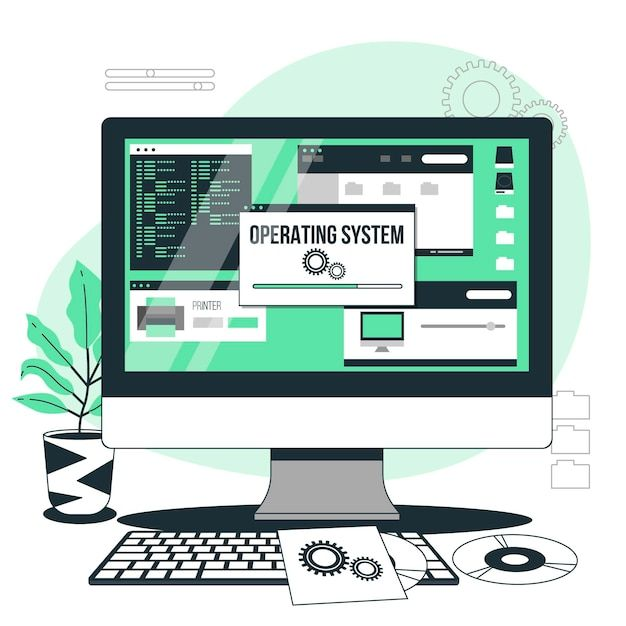
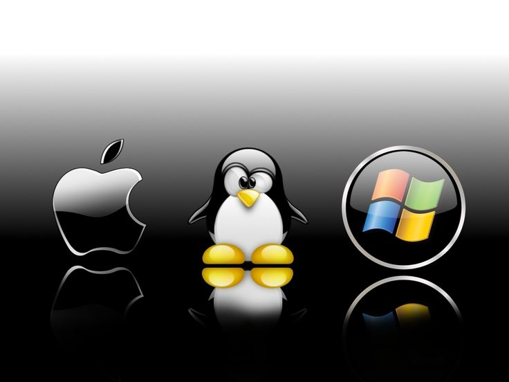
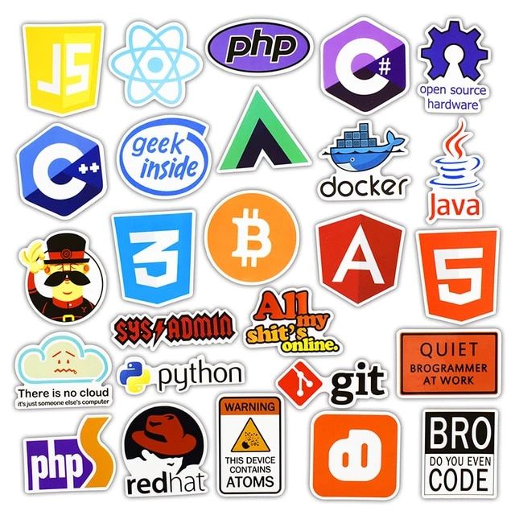
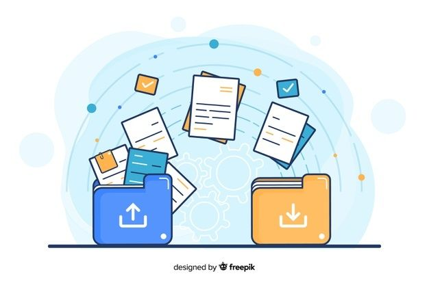

X
Software
¿Que es?
Se refiere a los programas de computadora, instrucciones y datos
que permiten que un sistema informático realice tareas
específicas. Es una parte esencial de cualquier dispositivo
informático y abarca desde sistemas operativos hasta aplicaciones
y utilidades.
Tomando como base esta definición y su aplicación, será de gran
utilidad el conocimiento y dominio de herramientas tecnológicas
que permitan mejorar la productividad a través de procesadores de
texto, hojas electrónicas, presentaciones ejecutivas y bases de
datos, junto con el conocimiento y dominio del ciberespacio y
herramientas colaborativas.
En el campo de las TIC se encuentran diferentes tipos de software
de acuerdo con la función que realizan, bien sea en la
administración de los recursos del computador o en las
aplicaciones que el usuario necesite para el desempeño de su
trabajo.
Anterior
Siguiente
X
Internet
¿Que es?
Algunas personas definen Internet como "La Red de Redes", y otras
como "Las Autopistas de la Información". En efecto, Internet es
una Red de Redes porque está hecha a base a la unión muchas redes
locales de computadoras; a través de ella circulan constantemente
cantidades increíbles de información, por este motivo se le llama
también La Autopista de la Información.
Hoy, a nivel mundial, hay tantos millones de usuarios
"Internautas", es decir, de personas que "navegan" por Internet en
todo el mundo y se incrementa de manera diaria que no se pueden
contar. Se dice "navegar" porque es normal ver información que
proviene de muchas partes distintas en una sola sesión. Una de las
ventajas de Internet es que hace posible la conexión con todo tipo
de computadoras, desde los personales, hasta las más grandes,
incluso se pueden ver conectadas a la Red cámaras de vídeo,
robots, y máquinas de refrescos.
A las posibilidades que ofrece Internet se denominan servicios.
Cada servicio es una manera de sacarle provecho a la Red
independiente de las demás. Una persona podría especializarse en
el manejo de sólo uno de estos servicios sin necesidad de saber
nada de los otros. Sin embargo, es conveniente conocer todo lo que
puede ofrecer Internet, para poder trabajar con lo que más nos
interese. Hoy en día, los servicios más usados en Internet son...
Anterior
Siguiente
X
Aplicación
¿Que es?
El software o sistemas de aplicación son los programas que
permiten a una computadora realizar actividades específicas de
procesamiento de información y ofrecer una funcionalidad a los
usuarios finales. (Gómez de Silva Garza & Ania Briseño, 2008).
Ejemplo de este tipo de software son los editores o procesadores
de texto como Word, hojas de cálculo como Excel, presentaciones
ejecutivas como Power Point y antivirus como McAfee o Avast, entre
otros.
Estas aplicaciones permiten a los usuarios realizar diversas
actividades en sus dispositivos informáticos.
Anterior
Siguiente
X
Sistema
¿Que es?
Según (Gómez de Silva Garza & Ania Briseño, 2008), el software de
sistema está constituido por los programas que se encargan del
control y administración de los recursos de cómputo y los que
permiten la interacción entre los usuarios y los sistemas de
aplicación o el hardware.

Ejemplos de este tipo de software son los traductores
(compiladores, intérpretes y ensambladores) y los sistemas
operativos como Windows, XP o Vista, y varias versiones de Unix,
por ejemplo, AIX de IBM. En la actualidad se cuenta con versiones
más actualizadas como son Android, IOS, Windows 10, que funcionan
inclusive en equipos móviles, generando mayor rendimiento en los
dispositivos.

Anterior
Siguiente
X
Programacion
¿Que es?
El software de programación permite a determinados usuarios, la
comunicación con la máquina o dispositivo, para el desarrollo de
aplicaciones que facilitan el manejo de la información y con ello
la toma de decisiones; también se denominan lenguajes de
programación.

EL software de programación se presenta a través de Entornos
Integrados de Desarrollo (IDE), que ofrecen la posibilidad de
construir aplicaciones para diferentes ambientes como la Web y/o
dispositivos móviles. Algunos ejemplos de IDE son Netbeans,
Eclipse y otros conocidos como editores de programación, entre los
cuales se encuentran Visual Studio, Sublime Text, Brackets, Atom,
Etc.
Los lenguajes de programación se clasifican en tres niveles, alto,
medio y bajo de acuerdo con su comprensión y cercanía con la
máquina o dispositivo. El nivel bajo, se denomina lenguaje de
máquina y es utilizado para la creación y administración del
software del sistema o sistema operativo y el nivel más alto es
utilizado por los programadores en la creación de aplicaciones
comerciales o científicas.
Anterior
Siguiente
X
World Wide Web
¿Que es?
Se inventó a finales de los 80 en el CERN, el Laboratorio de
Física de Partículas más importante del mundo. Se trata de un
sistema de distribución de información tipo revista. En la Red
quedan almacenadas las llamadas Páginas Web, que no son más que
páginas de texto con gráficos o fotos.
Las personas que se conecten a Internet pueden solicitar un acceso
a dichas páginas y acto seguido éstas aparecen en la pantalla de
su computadora. A partir de la invención de la WWW, mucha gente
comenzó a conectarse a la Red desde sus domicilios, como mero
entretenimiento. Internet recibió un gran impulso, hasta el punto
de que hoy en día casi siempre que se hablamos de Internet, nos
referimos a la WWW.
Anterior
Siguiente
X
Acceso remoto
¿Que es?
El acceso remoto en el contexto de Internet se refiere a la
capacidad de acceder y controlar un sistema o dispositivo desde
una ubicación distante a través de la red. Esto permite a los
usuarios gestionar, controlar y utilizar recursos informáticos
como si estuvieran físicamente presentes en el lugar donde se
encuentra el sistema.
Es importante destacar que, aunque el acceso remoto ofrece muchas
ventajas en términos de flexibilidad y eficiencia, también es
crucial implementar medidas de seguridad adecuadas para proteger
la integridad y la confidencialidad de los datos durante la
transmisión a través de Internet.
Anterior
Siguiente
X
Comunicación
Los servicios de comunicación abarcan una amplia gama de
aplicaciones y plataformas que permiten la interacción y el
intercambio de información entre usuarios a través de la red.
Algunos aspectos clave relacionados con los servicios de
comunicación en Internet:
- Correo Electrónico (Email)
- Mensajería Instantánea
- Redes Sociales:
- Llamadas de Voz y Video
- Foros y Comunidades en Línea
- Blogs y Publicaciones en Línea
- Comunicación Empresarial
- Videojuegos en Línea
En resumen, los servicios de comunicación en Internet han
evolucionado enormemente, ofreciendo diversas formas de
interacción en línea. Estos servicios desempeñan un papel crucial
en la conectividad global y en la facilitación de la comunicación
personal, profesional y social en el mundo digital.
Anterior
Siguiente
X
Transferencias de archivos
FTP
"File Transfer Protocol" en inglés, es un protocolo estándar de la
red que define la forma en que los archivos deben transferirse a
través de Internet. Establece un conjunto de reglas y formatos
para la comunicación entre un cliente (el dispositivo que inicia
la solicitud) y un servidor (el dispositivo que responde a la
solicitud).

El funcionamiento básico de FTP implica dos partes: el cliente y
el servidor. El cliente inicia la conexión al servidor y, una vez
establecida la conexión, puede solicitar la transferencia de
archivos en ambas direcciones.
FTP es ampliamente utilizado para la gestión de archivos en
servidores remotos. Algunos de los casos de uso comunes incluyen:
transferencia de archivos, actualización de sitios web, copia de
seguridad.
Anterior
Siguiente